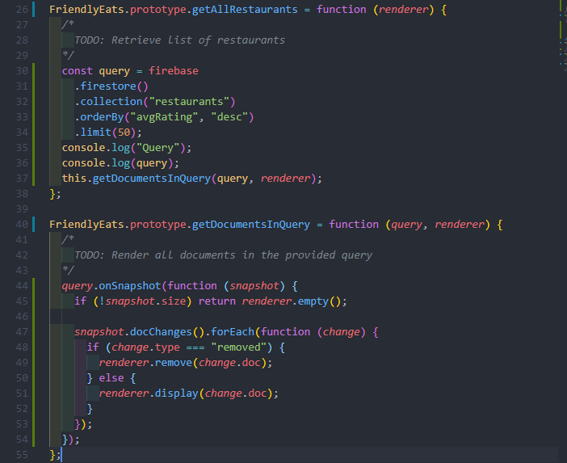

Firestore Code
1. onSnapshot(): DocRef.onSnapshot({snapshot}()) -- Promise
Monitor real time changes of data.
2. docChanges().forEach(): snapshot.docChanges().forEach({change}())
Monitor snapshot / snapshots changes.
3. get(): docRef.get() -> snapshot -- Promise
Get data for once and only.
4. withConverter({conveter})
Define the data structure that firestore saves and sends a piece of data.
Transactions and batched writes
Problem with without atomically writting data:
If the data data is denormalized across multiple documents, then...
- Writting to multiple docuemtns can be interrupted by external issues (internet problem) and cause inconsistent data. (use batched writes: writing to > 1 data)
- Data is a shared property that can be inconsistent because of being modified by multiple parties. (use Transactions: multi-writing to ≥1 data)
Batched writes
⭐Allow us to perform a bunch of writes(delection / creation / alteration) all at once in a batch. One fails then entire will be rolled back to it's original state.
We only tell the SDK what changes we want to make, and the SDK will tell the database to satisfy the changes.
Transction (Optimistic Concurrency Model)
⭐It makes sure the target data is always up to date and the current writing will not mess up with other writing (multi-writing).
Transaction fails -> retry
⭐A transaction consists of any number of get() operations followed by any number of write operations such as set(), update(), or delete().
- Step 1: Read: Transaction requests for the document that holds the data.
- Step 2: Logic: Check if the operation is still possible logically. (Online game example: Gold Exchange -> do the players have still have the gold to exchange)
- Logic check is the reason why we don't use numeric add function
- Step 3: Changes: Perform the couple of writes based of that the data is up to date.
- Step 4: Double Check: Perform Sanity Check that data hasn't changed since the first read.
- Step 5: Commit: Commit changes all at once.
Use cases for transaction:
- Transfer data between documents
- Other operation that might be modified by multiple writers + needed logical check. (Online game: We can not deduct player's money by $50 if he only has $10)
firestore.FieldValue.{}
1. firebase.firestore.FieldValue.increment(50)
Increment a numeric value: Atomically increment the population of the city by 50.
var washingtonRef = db.collection('cities').doc('DC');
washingtonRef.update({
population: firebase.firestore.FieldValue.increment(50)
});
Update elements in an array
2. firebase.firestore.FieldValue.arrayUnion({pieceOfData})
Adds elements to an array but only elements not already present.
var washingtonRef = db.collection("cities").doc("DC");
// Atomically add a new region to the "regions" array field.
washingtonRef.update({
regions: firebase.firestore.FieldValue.arrayUnion("greater_virginia")
});
3. firebase.firestore.FieldValue.arrayRemove({pieceOfData})
Removes all instances of each given element.
var washingtonRef = db.collection("cities").doc("DC");
// Atomically remove a region from the "regions" array field.
washingtonRef.update({
regions: firebase.firestore.FieldValue.arrayRemove("east_coast")
});